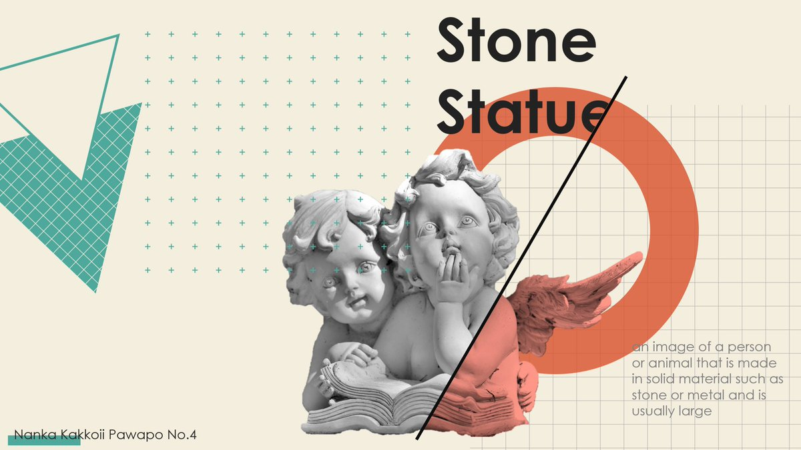
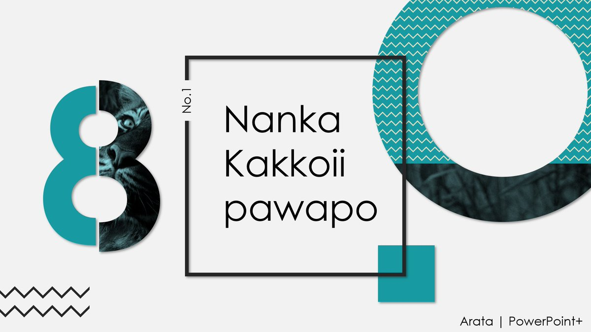
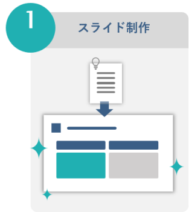
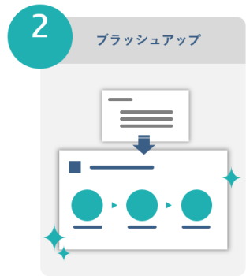
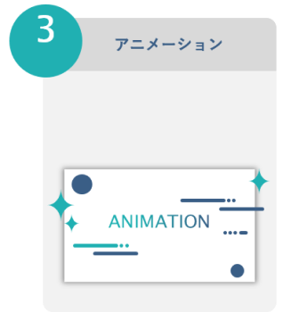
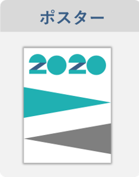
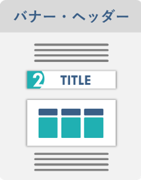
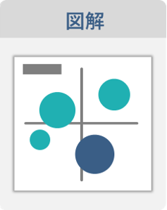

菅 新汰 | SUGA ARATA
1997年生まれ。早稲田大学社会科学部卒
2020年からPowerPointの発信をはじめる｡
学校現場におけるパワポの可能性を探求するため、
「学校パワポ研究所」を設立。
「伝わる」＆「ワクワク」するようなスライドづくりが強み。
- 

- 
PowerPoint制作
ご要望に合わせて、対応いたします。



その他の制作物



使用ソフト
PowerPoint / Illustrator / Photoshop など


24時間以内に返信いたします。